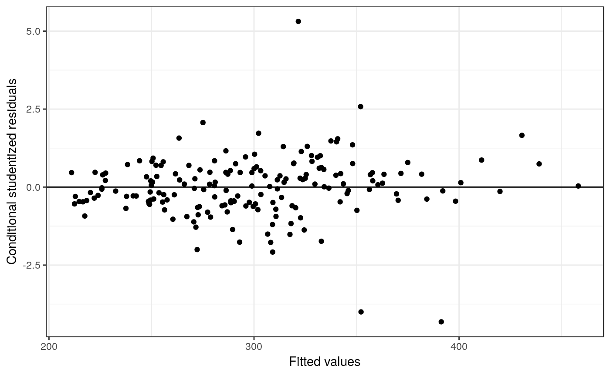
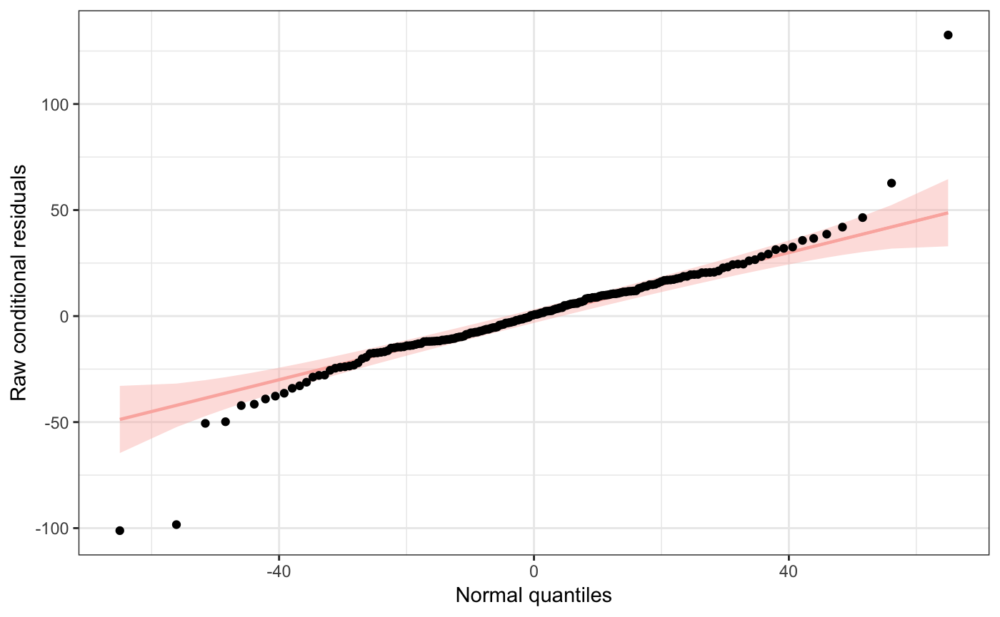
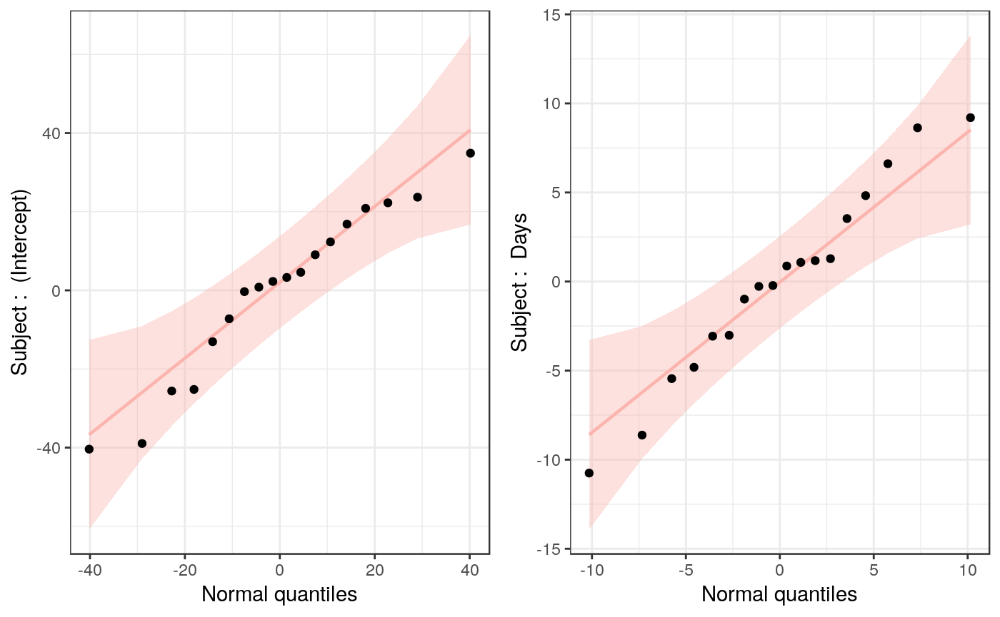

redres is an R package developed to help with diagnosing linear mixed models fit using the function lmer from the lme4 package. This package both computes residuals types and creates plots that are not available from lme4.
redres can be installed from the GitHub repository using the devtools package.
# Installs redres
devtools::install_github("goodekat/redres")Once installed, the package can be loaded as usual.
# Loads the library
library(redres)The package contains the following functions.
redres computes residuals given an lmer model and a specified residual type. The available residuals types are listed below.
"genres": generalized residuals"pearson_cond": Pearson conditional residuals"pearson_mar": Pearson marginal residuals"raw_cond": raw conditional residuals (default)"raw_mar": raw marginal residuals"std_cond": studentized conditional residuals"std_mar": studentized marginal residuals# fits an lmer model
library(lme4)
m <- lmer(Reaction ~ Days + (Days | Subject), data = sleepstudy)
# computes the default residuals (raw conditional)
rc_resids <- redres(m)
# computes the Pearson marginal residuals
pm_resids <- redres(m, type = "pearson_mar")
# computes the studentized conditional residuals
sc_resids <- redres(m, type = "std_cond")
# puts the residuals in a data frame and prints the first six rows
resids <- data.frame(rc_resids, pm_resids, sc_resids)
head(resids)## rc_resids pm_resids sc_resids
## 1 -4.102638 -0.05183946 -0.1827204
## 2 -14.624497 -0.08779115 -0.6273252
## 3 -42.195157 -0.57418908 -1.7645439
## 4 8.777483 0.97112562 0.3616111
## 5 24.523024 1.48696343 1.0048545
## 6 62.694664 2.39619943 2.5789296plot_resid creates a plot (using ggplot2) of the residuals versus the fitted values given a model and a specified residual type. All residuals types listed for redres work with plot_resid execpt genres since this type of plot is not meaningful for generalized residuals.
# creates a plot of the residuals versus fitted values
plot_redres(m, type = "std_cond")
plot_genres (Kellie - want to fill in this section)
# creates a generalizaed residual quantile plot
plot_genres(m)
plot_raneff… (Kellie - want to fill in this section asl well)
# creates a normal quantile plot of the random effects
plot_raneff(m)
To learn more about redres, see the package vignette. This document contains information about…
Additionally, it contains an example using redres to assess the assumptions of a linear mixed model.